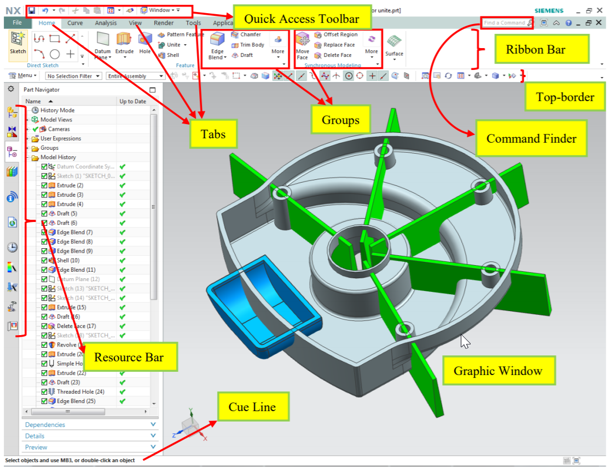
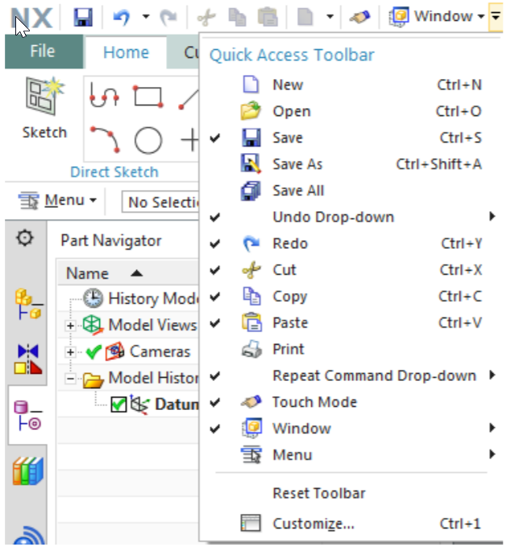
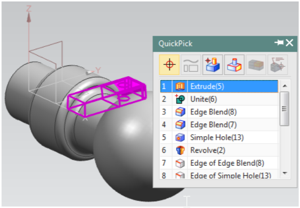

CH1 引言 <<
Previous Next >> CH3 二維草圖
CH2 入門
2.1 啟動 NX12 並打開文件
2.1.1 執行NX12
2.1.2 開新檔案
-> 單擊螢幕上方的"新建"按鈕
或
-> 瀏覽螢幕左上方的 File（文件）下拉菜單，然後單擊 New（新建）
或
-> 按 ctrl + N
將打開一個新視窗，詢問要創建的新文件的類型、單位、名稱和位置。默認單位是毫米。
-> 輸入文件的適當名稱和位置，然後單擊“確定”。
2.1.3 開啟現有零件 （檔案）
->單擊屏幕頂部的"打開或打開最近的零件按鈕
或
->瀏覽屏幕左上方的 File（文件）下拉菜單，然後單擊 Open。
或
-> 按 ctrl + O
將顯示“打開零件文件”對話框。 右側可預覽文件。 可以通過取消核取方塊“預覽”來禁用“預覽”。
->取消開啟零件 （檔案）則單擊取消退出開啟現有檔案
2.2 列印、儲存檔案和關閉檔案
2.2.1 列印 NX12 影像
要從當前顯示器"列印"圖像，
->點擊文件→列印
下圖顯示了“列印”對話框。可以選擇要使用的印表機或指定編號的列印份數，紙張尺寸等。您還可以為所有三個選擇比例尺寸。 您也可以選擇
通過單擊來列印，即線框實體模型輸出下拉菜單，如右圖所示側
->取消列印則單擊取消退出列印
2.2.2 儲存檔案
->點擊文件→保存
有五個選項可保存文件：
●保存：此選項將使用創建零件文件時使用的相同名稱將零件保存在屏幕上。
●僅保存工作零件：此選項僅將活動零件保存在屏幕上。
●另存為：此選項允許您使用其他名稱和/或類型將零件保存在屏幕上。 默認類型是.prt。 但是，可以將文件另存為 IGES（.igs）、STEP 203（.stp）、STEP 214（.step）、AutoCAD DXF（.dxf）、AutoCAD DWG（.dwg）、CATIA模型（.model）和 CATIA V5（.catpart）。
●全部保存：此選項將使用現有名稱保存所有打開的零件文件。
●保存書籤：此選項會將屏幕上的當前模型的屏幕截圖和上下文另存為.JPEG文件和書籤。
2.2.3 關閉文件
您可以選擇關閉零件在屏幕上可見
->點擊文件→關閉
如果您關閉文件，該文件將從以下位置清除工作記憶和任何更改不保存將丟失。 因此，請記住選擇“保存並關閉”，“另存為並關閉”，保存所有並關閉或保存所有並退出。 在在前三個選項的情況下，已選擇，否則所有零件都將關閉，但NX12會繼續運行。
2.2.4 離開NX12
->單擊文件→退出
如果打開了文件並在未保存的情況下進行了更改，則將詢問是否真的想退出。
->選擇否，保存文件，然後退出
->選擇是，不保存文件，退出
2.3 介面
2.3.1 滑鼠功能
2.3.1.1 滑鼠左鍵（MB1）
滑鼠左鍵用於選擇圖標、菜單、和圖形屏幕上的其他實體。 在任何功能上雙擊 MB1 都會自動打開“編輯對話框”。 單擊對像上的 MB1，使用戶可以快速使用如下所示的幾個選項。 這些選項將在下一章中討論。
2.3.1.2 滑鼠中鍵（MB2）
MB2 或滾動按鈕用於通過按下來旋轉對象，按住並拖動， 模型也可以繞單個軸旋轉。 繞軸旋轉垂直於屏幕，將游標放在圖形屏幕的右邊緣附近，然後旋轉。 同樣，對於垂直軸和垂直於屏幕的軸，單擊底部屏幕的上邊緣和上邊緣分別旋轉。 如果您同時按住 MB2 位置幾秒鐘，它將固定旋轉點（出現橙色圓圈符號）您可以在對象周圍拖動以查看。如果是滾動按鈕，則可以通過滾動對象來放大和縮小。 單擊 MB2 將如果打開了任何彈出窗口或對話框，還可以執行“確定”命令。
2.3.1.3 滑鼠右鍵（MB3）
MB3 用於訪問用戶界面彈出菜單。 隨後彈出的選項，具體取決於選擇模式和應用。 下圖顯示在草圖中應用。 選擇功能後單擊 MB3 將提供與該功能相關的選項（對象/操作菜單）。單擊 MB3 並按住該按鈕將在功能周圍顯示一組圖標。這些圖標帶有可應用於功能的可能命令。
2.3.1.4按鈕組合
放大/縮小：
->同時按住 MB1 和 MB2 並拖動
或
->按住鍵盤上的 ctrl 按鈕，然後按住並拖動 MB2
或
平移：
->同時按住 MB2 和 MB3 並拖動
或
->按住鍵盤上的 shift 按鈕並按住 MB2
菜單快捷方式：
->按住 ctrl + shift 和 MB1、MB2 和 MB3 可以看到功能的快捷方式，直接草圖組和同步建模組
2.3.2 NX 12網關
下圖顯示了打開文件時 NX12 窗口的典型佈局。 這是 NX12 的網關，從中可以選擇要處理的任何模塊，例如建模，必須注意這些工具欄可能不完全在同一位置如下圖所示。 工具欄可以放置在屏幕上的任何位置或位置。查找相同的圖標集。

2.3.2.1 功能區欄
功能區界面使用戶能夠輕鬆訪問不同的命令，而無需縮小圖形窗口區域。 命令組織在不同選項卡下的功能區欄中和組，以便於識別和訪問。例如，在上圖所示的功能區欄中，我們具有“起始”，“曲線”等選項卡。 在裡面主頁選項卡中，我們具有直接草圖，特徵，同步建模和曲面組。 並且在每個組中，我們有一組功能強大的命令。
2.3.2.2快速訪問工具欄
快速訪問工具欄具有最常用的按鈕（保存、撤消、重做、剪切、複製、粘貼和最近的命令）以加快建模過程。 您可以輕鬆地將這些按鈕自定義為如下圖所示。
2.3.2.3命令查找器
如果您不知道在哪裡可以找到命令，請使用“命令查找器”。 若忘記了
樣式掃描的位置。
->在命令查找器中輸入掃描
->將鼠標懸停在樣式掃描上
->NX將顯示命令路徑：菜單→插入→掃描→樣式化掃描
或
->在命令查找器中輸入掃描
->在命令查找器窗口中單擊樣式化掃描

2.3.2.4 頂部
頂部邊框中最重要的按鈕是菜單按鈕。 大部分功能菜單中提供了該軟件的版本。 選擇欄顯示選擇選項。 這些選項包括用於選擇特徵的“過濾器”，“零部件/裝配體”和“捕捉點”。 最“視圖”選項卡中的常用按鈕也顯示在“頂部邊框”中。
2.3.2.5 資源欄
資源欄使用很少的用戶界面就可以在一處顯示多個頁面的圖標空間。 NX 12將所有導航器窗口（裝配體、約束和零件）放置在資源欄中、以及重用庫、HD3D工具、Web 瀏覽器、歷史記錄面板、Process Studio、製造嚮導、角色和系統場景。 兩個最重要的寡婦是解釋如下。
零件導航器
->單擊零件瀏覽器圖標，第三個資源欄頂部的圖標零件導航器提供可視化表示要素中的父子關係以樹型格式在單獨的窗口中工作。
它顯示了在此期間使用的所有原語，實體造型。它允許您執行各種編輯這些功能上的操作。例如，您可以使用零件導航器來抑製或取消抑制功能或更改其參數或位置尺寸。刪除綠色的勾號將“取消”功能。該軟件會給警告如果父子關係被打破取消任何特定功能。
零件瀏覽器可用於所有NX應用程序而不僅僅是建模。但是，您只能執行功能編輯操作當您在“建模”模塊中時。在零件瀏覽器中編輯特徵將自動更新模型。特徵編輯將在後面討論。
歷史
->單擊歷史記錄圖標，資源欄頂部的第七個圖標歷史選項板提供對最近打開的文件或其他選項板條目的快速訪問。有可能用於重新加載最近處理過的零件或重複添加一小組調色板項目的模型。
歷史選項板會記住上一次使用的選項板選項以及會話的狀態當它關閉時。 NX存儲已加載到會話中的選板並將其還原到下屆會議。移動零件時，系統不會清除歷史記錄選板。
2.3.2.6 提示線
提示行顯示提示消息，指示接下來需要採取的行動。在 - 的右邊
提示行，狀態行位於顯示有關當前選項的消息或最近完成的功能。
進度表顯示在提示行中當系統執行耗時的操作，例如加載大型裝配體。的
儀表顯示的操作百分比完成了。操作完成後，系統顯示下一個適當的提示。
2.3.3幾何選擇
您可以過濾選擇方法，這有助於在緊密的簇中輕鬆選擇幾何。在此外，您可以執行任何功能NX12智能提供的操作選項取決於所選實體。項目的選擇可以基於實體的程度，例如選擇幾何實體，特徵和零部件。選擇方法可以選擇
選擇選擇工具欄中的圖標之一。
2.3.3.1特徵選擇
單擊任何圖標，可以選擇零件文件中的特徵。它不會選擇基本實體，例如邊緣，面等。選定的特徵也可以應用於一部分或整個根據要求組裝。除此之外，可以進一步縮小特徵的過濾範圍在下拉菜單中選擇所需選項之一，如
數字。 例如，選擇“曲線”將僅高亮顯示屏幕。 默認值為“無選擇過濾器”。
2.3.3.2常規對象選擇
將鼠標光標導航到實體附近，直到用突出顯示它為止洋紅色，然後單擊鼠標左鍵以選擇任何幾何實體，功能或組件。如果要選擇隱藏在顯示的幾何圖形後面的實體，將鼠標光標放在屏幕上該區域附近，以便光標球佔據了投影在屏幕上的隱藏幾何的一部分屏幕。幾秒鐘後，球形光標變為加號如圖所示。單擊鼠標左鍵（MB1）以獲取選擇確認對話框，如下圖如下。這個 QuickPick 菜單由實體列表組成捕獲在光標的球內。的實體按以下升序排列實體的程度。例如，邊和頂點指定為較低給出立體的數字更高的數字。通過移動光標顯示的數字，NX12將用洋紅色突出顯示屏幕上的相應實體。

2.3.4
用戶首選項用於定義以下內容的顯示參數：
新對象，名稱，佈局和視圖。您可以設置圖層，創建對象的顏色，字體和寬度。您也可以設計佈局和視圖，控制對象和視圖的顯示名稱和邊框，更改選擇球的大小，指定選擇矩形方法，設置鏈接公差和方法，以及設計和激活網格。改變你使用“首選項”菜單進行覆蓋客戶默認使用相同的功能。
2.3.4.1 用戶界面
->選擇首選項→用戶界面以找到對話框中的選項用戶界面選項可自定義NX的工作方式以及與您設置的規范進行交互。您可以控制主窗口的位置，大小和可見性狀態，圖形顯示和信息窗口。您可以設置系統用於的小數位數（精度）信息中顯示的輸入文本字段和數據窗口。您還可以為文件指定完整或小型對話框選擇。您還可以設置宏選項並啟用撤消操作的確認對話框。
•佈局選項卡允許您選擇用戶界面環境
•“觸摸”選項卡使您可以使用觸摸屏
•通過“選項”選項卡，您可以設置精度級別（在“信息”中
窗口）
•工具中的日誌選項卡允許您使用多種編程語言
•工具中的“宏”選項卡允許您設置顯示動畫時的暫停
2.3.4.2 可視化
->選擇首選項→可視化以找到對話框中的選項該對話框控制會影響顯示的屬性
圖形窗口。一些屬性與零件或零件的特定視圖。的設置這些屬性保存在零件文件中。對於其中許多屬性，當創建新零件或視圖時，該設置初始化為客戶默認值中指定的值文件。其他屬性與會話和適用於會話中的所有部分。一些設置這些屬性在每個會話中保存在註冊表。對於某些會話屬性，設置可以為初始化為客戶默認值指定的值環境變量。
->選擇首選項→調色板以找到對話框中的選項單擊首選項→背景以獲取
另一個彈出對話框。你可以改變您想要的背景色
背景色是指圖形窗口的背景。 NX支持所有顯示模式的漸變背景。您可以
選擇陰影或線框的背景顏色顯示。背景可以是純色或漸變色。
所有背景顏色的有效選項是0到255。
您可以更改並觀察顏色和對象的半透明性。
->單擊首選項→對象
這將彈出一個對話框窗口“對象首選項”。
您也可以將此設置應用於以下對象的單個實體
固體。例如，您可以單擊任何特定的
實體的表面並應用“顯示”設置。
2.4
2.5
2.6
CH1 引言 <<
Previous Next >> CH3 二維草圖